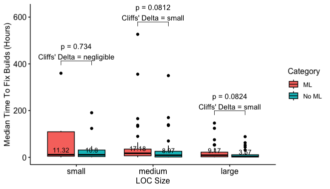

Here we present the results for each RQ that we address.
RQ1. To what extent do CI practices adoption differ between ML and non-ML projects?
RESULT SUMMARY
ML projects tend to require a longer build duration. In addition, medium-sized ML projects tend to have a lower test coverage.
RQ1 RESULTS' DETAILS
The figures below show the Boxplots of the distrubutions and the statistical comparisons of the CI metrics "buil duration", "test coverage", "time to fix broken builds", and "commits activity" between ML and non-ML projects.
Figure 1. Build Duration per project category and size.
Figure 2. Build Duration of medium-sized projects per programming language type.
Figure 3. Test Coverage per project category and size.
Figure 4. Commit Activity per project category and size.

Figure 5. Time to Fix Broken Builds per project category and size.
RQ2. What are the evolution trends of build duration and test coverage within ML and non-ML projects?
RESULT SUMMARY
Small and medium-sized ML projects manifest higher increasing build duration trends (75% and 61.4%) compared to non-ML projects (35.7% and 44.7%). Furthermore, both ML and non-ML projects manifest a maintaining test coverage trend, even with 46% of the medium ML projects exhibiting a median coverage rate below 75%.
RQ2 RESULTS' DETAILS
The figures below show the time series clusters and their trends for the build duration and test coverage metrics on ML and non-ML projects.
Figure 6. Build Duration Clustering Trends’ Patterns in ML Projects.
Figure 7. Build Duration Clustering Trends’ Patterns in non- 771 772 ML Projects.
Figure 8. Clustering trends of "Build Duration" time series per project category and size.
Figure 9. Test Coverage Clustering Trends’ Patterns in ML Projects.
Figure 10. Test Coverage Clustering Trends’ Patterns in non-ML Projects.
RQ3. What do ML and non-ML developers discuss about CI in their projects?
RESULT SUMMARY
Both ML and non-ML projects share common discussions on CI Build Execution and Status, CI Infrastructure, CI Pipeline Configuration, and CI Testing and Code Quality. However, ML projects exhibit a more extensive range of CI-related themes (74 themes) compared to non-ML projects (24 themes). Notably, a significant difference arises in the prevalence of the "relatedness of failures" theme in ML project discussions, indicating a potential higher incidence of false positives in their CI systems.
RQ3 RESULTS' DETAILS
Figures 11 and 12 present the CI discussions (i.e., the themes) that emerged from our document analysis.
Figure 11. CI-related themes discussed in ML projects.
Figure 12. CI-related themes discussed in non-ML projects.
Table 1 presents the description of the general themes related to CI discussions that we found in the context of ML and non-ML projects.
| theme |
description |
context |
|---|
| CI Build Execution and Status |
Discussions about managing and monitoring the execution and status of CI builds. |
non-ML/ML |
| CI Infrastructure |
Discussions about the underlying infrastructure supporting CI processes. |
non-ML/ML |
| CI Pipeline Configuration |
Discussions about configuration, structure, and optimization of the CI pipeline. |
non-ML/ML |
| CI Testing and Code Quality |
Discussions about aspects related to testing practices and code quality within the context of CI. |
non-ML/ML |
| CI on Software Development Process |
Discussions about the usage and impact of CI within the software development process. |
ML |
Table 1. General themes related to CI discussions in ML and non-ML projects.
Table 2 presents the description of codes related to CI discussions that we found in the context of ML and non-ML projects.
| code |
description |
context |
|---|
| CI status tracking |
Tracking the status of CI builds. |
non-ML/ML |
| CI debugging |
Identifying and resolving issues or bugs in the CI process. |
non-ML/ML |
| relatedness of failures |
Identifying that the build failure is not related to the proposed code change. |
non-ML/ML |
| CI triggering |
Methods and events that trigger the initiation of CI builds. |
non-ML/ML |
| CI configuration |
Discussing the configurations of the parameters and settings for CI processes. |
non-ML/ML |
| fix broken CI |
Addressing issues that cause the CI breakage. |
non-ML/ML |
| CI local reproduction |
Recreating or investigating CI failures on a local development environment. |
non-ML/ML |
| test addition |
Discussing the addition of new tests to the CI test suite. |
non-ML/ML |
| dependency management |
Managing dependencies and ensuring they are correctly handled in the CI pipeline. |
non-ML/ML |
| CI as decision-making |
Discussing the usage of CI results as a basis for decision-making in the development process. |
ML |
| CI build duration |
Discussing the the time taken for CI builds to be completed. |
non-ML/ML |
| CI rebase |
Handling code rebasing within the context of CI. |
ML |
| linting |
Discussing code style and quality through linting tools in the CI process. |
non-ML/ML |
| test coverage |
Discussing test coverage in the CI test suite. |
non-ML/ML |
| CI flakiness |
Dealing with flaky or inconsistent behavior in CI builds. |
non-ML/ML |
| CI clarification |
Providing clarifications and additional information related to CI processes. |
ML |
| CI regression |
Managing regressions in the CI pipeline. |
ML |
| test setup |
Discussing the configuration of the environment for running tests in the CI process. |
non-ML/ML |
| CI channel |
Discussions related to installations and configuration of CI systems. |
ML |
| test refactoring |
Restructuring or improving tests in the CI test suite. |
ML |
| test requirements |
Managing the requirements for tests in the CI pipeline. |
ML |
| (mis)trust in CI |
Mistrust in the results produced by CI builds. |
ML |
| CI explanation |
Providing explanations for CI-related processes and decisions. |
ML |
| CI infrastructure |
Discussing the infrastructure supporting CI. |
ML |
| CI as facilitator |
Captures conversations centered on streamlining CI processes by integrating external tools or services effectively. |
ML |
| CI as quality-gate |
Treating CI as a quality gate to ensure high standards in code. |
ML |
| CI backporting |
Backporting changes or fixes identified in the CI process to previous versions. |
ML |
| CI caching |
Managing caching strategies to improve CI build performance. |
non-ML/ML |
| CI load |
Managing the load on CI infrastructure and resources. |
ML |
| CI merge conflicts |
Discussing merge conflicts during the CI process. |
ML |
| CI static analysis |
Using static analysis tools to assess code quality in the CI pipeline. |
ML |
| skipping CI |
Discussing conditions under which CI builds can be skipped or ignored. |
non-ML/ML |
| test instructions |
Providing instructions for running tests in the CI environment. |
ML |
| test update |
Discussing test update in the CI test suite. |
non-ML/ML |
| backwards compatibility |
Managing backward compatibility of code changes in the CI process. |
ML |
| CI build frequency |
Discussing the frequency of continuous integration builds. |
ML |
| CI correctness |
Assessing the correctness of CI build results. |
ML |
| CI double-check |
Discussing additional checks in the CI build results. |
ML |
| CI permissions |
Discussing permissions to CI workflows management. |
ML |
| CI policy |
Establishing policies governing the CI process. |
ML |
| CI security |
Discussing security concerns in the context of CI. |
ML |
| CI testability |
Discussing how easily testable code changes are in the CI environment. |
ML |
| integration delay |
Discussing the influence of CI on the time reviewers take to integrate code changes in the mainstream. |
ML |
| multiple jobs |
Managing multiple jobs within the CI pipeline. |
ML |
| pipeline setting |
Configuring settings for the CI pipeline. |
ML |
| test fixture |
Setting up fixtures for tests in the CI testing suite. |
ML |
| test guidance |
Providing guidance for writing tests in CI. |
ML |
| test readability |
Discussing the readability and clarity of test cases in the CI testing suite. |
ML |
| build system prototype |
Discussing the development of prototypes for the build system in CI. |
ML |
| CI build complexity |
Discussing the complexity in the CI build process. |
ML |
| CI build size |
Discussing the size of the CI build process. |
ML |
| CI credits |
Discussing the usage of CI credits to execute the CI workflow within the CI service. |
ML |
| CI effectiveness |
Discussing and evaluating the overall effectiveness of the CI pipeline. |
ML |
| CI stability |
Discussing stability and reliability in the CI process. |
ML |
| CI steps |
Defining and organizing the steps in the CI pipeline. |
ML |
| ease of installation |
Discussing the ease of installation and setup of the CI environment. |
ML |
| lack of tests |
Discussing the lack of tests in the CI pipeline. |
ML |
| learning CI |
Discussing how the CI workflow steps work. |
ML |
| memory management |
Discussing memory usage in the context of CI builds. |
non-ML/ML |
| model training jobs |
Managing jobs related to training machine learning models in the CI pipeline. |
ML |
| multi-pipelines |
Discussing the coordination of multiple pipelines within the CI system. |
ML |
| repository tagging |
Discussing the management of version tagging in the repository within CI. |
ML |
| review delay frustration with green CI |
Dealing with frustration related to delays in code reviews despite a green CI. |
ML |
| scheduled build |
Discussing the scheduling of builds in the CI process. |
ML |
| test discrepancies |
Discussing discrepancies and inconsistencies in test results within the CI test suite. |
ML |
| test freeze |
Managing and dealing with test freezes in the CI test suite. |
ML |
| test interaction |
Handling interactions and dependencies between tests in the CI process. |
ML |
| test issues |
Discussing issues related to tests in the CI suite. |
ML |
| test parametrization |
Discussing configuration and managing parameters for tests in the CI process. |
ML |
| test removal |
Removing and managing tests in the CI suite. |
ML |
| testing purposes |
Discussing the purpose and goals of testing within the CI process. |
ML |
| testing scope |
Discussing the scope of testing within the CI pipeline. |
ML |
| workflow permissions |
Managing permissions and access control within the workflow of the CI process. |
ML |
| CI is stuck |
Discussion issues where the CI process is stuck. |
non-ML |
| test structure |
Organizing and structuring the test suite for better clarity and maintenance. |
non-ML |
| CI service churn |
Discussing the churn of the CI services being used. |
non-ML |
| test guidelines |
Discussing about guidelines for writing tests in the CI pipeline. |
non-ML |
| test size |
Discussing the test size within the CI test suite. |
non-ML |
Table 2. Description of codes related to CI discussions in ML and non-ML projects.